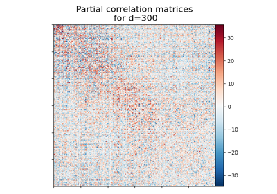
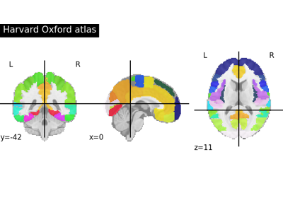
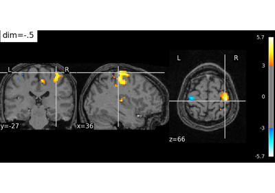
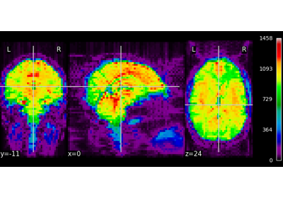
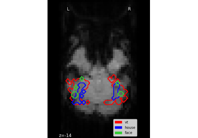
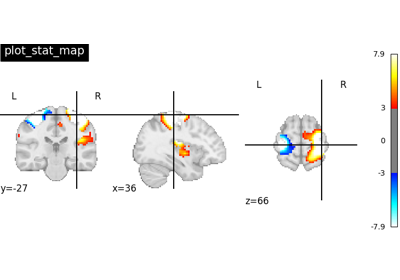
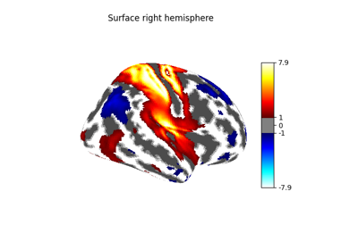

9.8.1. Visualization of brain images¶
See Plotting brain images for more details.


Visualizing Megatrawls Network Matrices from Human Connectome Project
Visualizing Megatrawls Network Matrices from Human Connectome Project

Basic Atlas plotting

Visualizing multiscale functional brain parcellations
Visualizing multiscale functional brain parcellations


Visualizing a probabilistic atlas: the default mode in the MSDL atlas
Visualizing a probabilistic atlas: the default mode in the MSDL atlas

Controlling the contrast of the background when plotting
Controlling the contrast of the background when plotting

NeuroImaging volumes visualization
NeuroImaging volumes visualization


Plot Haxby masks

Technical point: Illustration of the volume to surface sampling schemes
Technical point: Illustration of the volume to surface sampling schemes

Plotting tools in nilearn



Making a surface plot of a 3D statistical map
Making a surface plot of a 3D statistical map